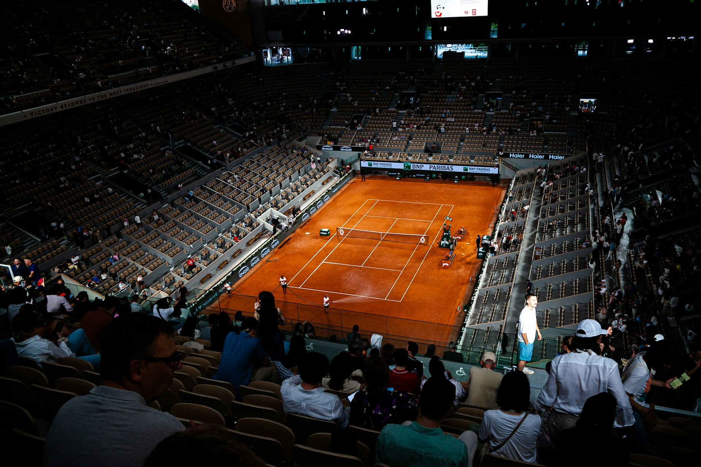
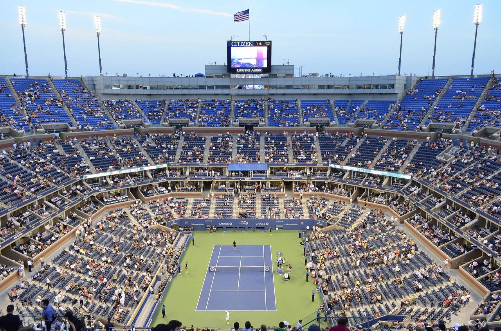

What are the 4 Grand Slams?
The four Grand Slams (also called "Majors") are the most prestigious tournaments in tennis. They offer the most ranking points, prize money, and public attention. They represent the highest level of professional tennis and are held annually in a specific chronological order. The season kicks off in January with the Australian Open in Melbourne, played on blue-tinted hard courts and often famous for its extreme summer heat. In late May, the action shifts to Paris for the French Open (Roland-Garros), the only Major played on red clay, a slow surface that favors endurance and long baseline rallies. Wimbledon follows in late June in London; as the oldest and most traditional tournament, it is played on grass and requires players to adhere to a strict all-white dress code. The season concludes in late August with the US Open in New York City, held on hard courts and known for its electric atmosphere, night sessions, and massive crowds at Arthur Ashe Stadium.
Australian Open (AO)

Roland Garros

- Location: Melbourne Park, Melbourne, Australia
- Surface: Hard Court (Blue Plexicushion)
- Time: January
- Vibe: Known as the "Happy Slam" due to its festive atmosphere. It is physically grueling because players often compete in extreme summer heat (regularly above 35°C).
- 2026 Update: Carlos Alcaraz won the men's title, completing his "Career Grand Slam" (winning all four majors at least once). Elena Rybakina claimed the women's title.
Wimbledon

US Open
